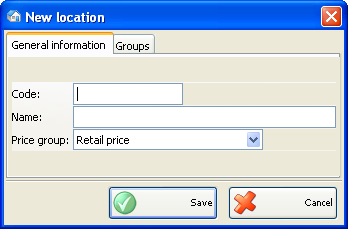
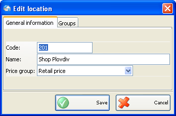
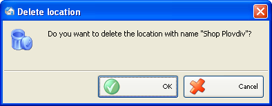

Adaugare, editare si stergere localizari
Puteti adauga articole in lista de localizari in fereastra Localizari noi.

Introduceti parametrii de baza ai localizari: cod, nume si grup pret.
Grupa de pret determina lista de preturi care se va aplica pentru localizarea respectiva, in cazul in care nu este stabilita nici un grup de pret pentru partener, se vor folosi in operatii. Se pot defini pana la 10 grupe de pret. Folositi modulul Modificare preturi pentru definire preturi.

Puteti edita toti parametruu in fereastra Editare localizare.
Pentru stergerea unui articol din lista, selectati linia corespunzatoare din lista (tabel) si click pe butonul Sterge sau apasati tasta� Delete.

Confirmati stergerea in partea de sus a ferestrei pentru a completa actiunea.
�2006-2012 Microinvest, All rights reserved